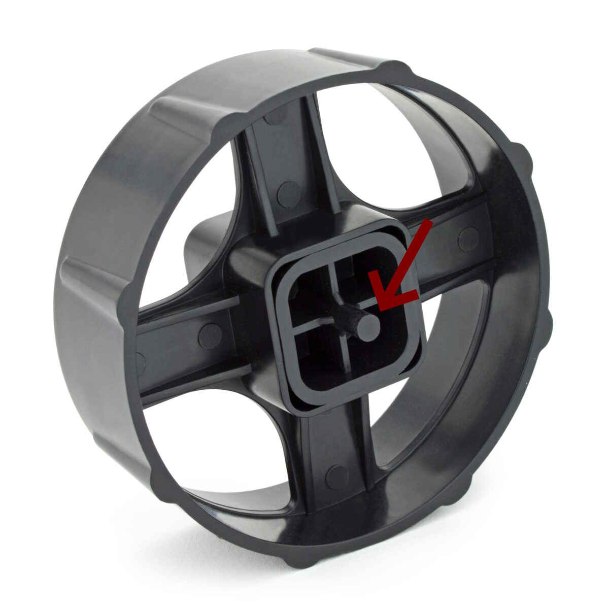

3D printing a repair for my sellotape dispenser
The dispenser
I like attaching things to other things. Thus, my sellotape dispenser means a lot to me.
A few years ago, and after a short while in autonomy peeling and cutting tape raw from the reel, all the time with grand memories of a heavy sellotape dispenser-filled childhood, my sister and I realised we could bring our nostalgic goggles into the present by... each buying our own sellotape dispenser.
I have to say, it has revolutionised my life.

The repairs
A while ago I dropped the dispenser from a height (I was balancing it on the top of a door). When it fell, what I'm calling the arms of what I'm calling the core of what I'm calling the wheel snapped off.
They're what lets the wheel spin around in the trough.

So, the tape now fell straight into the dispenser and didn't spin properly.

Now, one thing I love almost as much as tape and papercraft is repairing things. I thought it was a nice opportunity for 3D printing, as I hadn't 3D printed anything before, and it was a small, specifically shaped item. Perfect.
I couldn't find anything online already for "Rapesco 500 sellotape core", so I drew a schematic and gave it to my friend who graciously made a 3D model.

Here's a screenshot of the 3D model. You can download the STL here
(Tape Roller.STL) or on the GitHub repository (https://github.com/alifeee/rapesco-500-sellotape-dispenser-core). I haven't used thingiverse or printables or any of those
sites; GitHub seemed fine enough for sharing the file. If you download
the STL, you can also preview it in 3D in your browser on
https://www.viewstl.com/ or
https://3dviewer.net/ (or googling
"STL viewer online").

I printed the piece at, and with help from the members of, Sheffield Hackspace (https://www.sheffieldhackspace.org.uk/). It turned out pretty nice!
...and it fit into the wheel perfectly!

I could have fixed it in countless other ways. Perhaps simply with a bamboo skewer. But, 3D printing was fun and I'd been meaning to try it for a while. Perhaps, as it breaks further, I'll replace other parts of it, and I'll eventually own Theseus' sellotape dispenser.
For now, onto more taping!